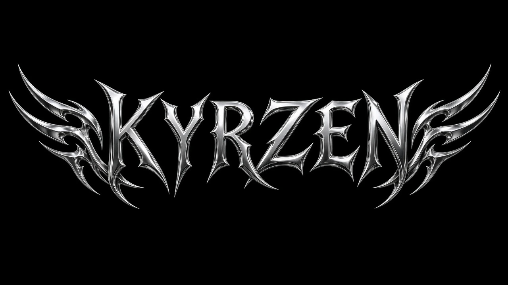
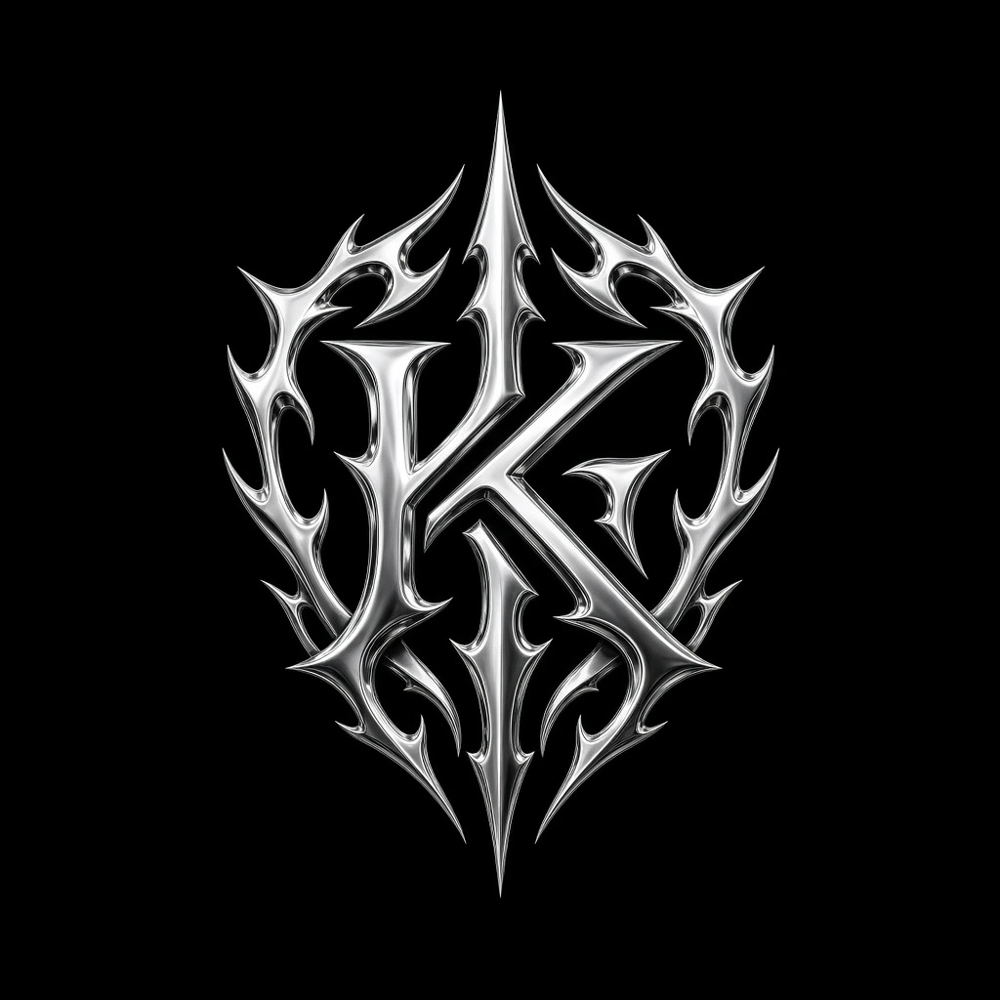
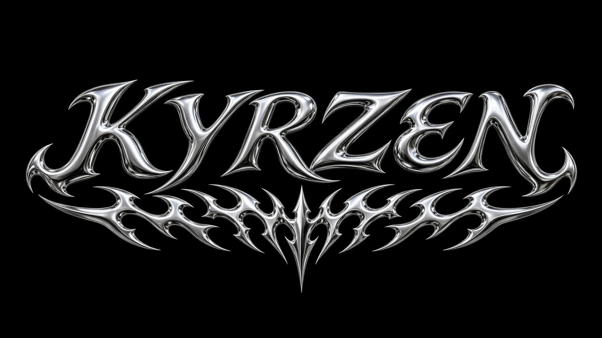

A · WORDMARK WITH TRIBAL WINGSSharp tribal letterforms, symmetrical wings. Strongest as a large print or back graphic.

B · MONOGRAM / EMBLEMCompact K emblem with tribal spikes. Works best small as a chrome applique.

C · SCRIPT WITH TRIBAL ORNAMENTLiquid chrome script over a tribal band. Wide format, good for headers and labels.